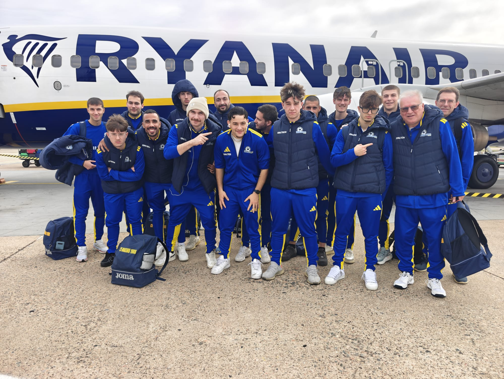

Finisce 6-2 la prima delle due trasferte sarde della stagione. I seggiolai sono stoici, ma i padroni di casa non perdonano sugli episodi
Il Manzano percorre più di 1000 km, gioca con coraggio e applicazione, riceve complimenti e apprezzamenti ma torna a mani vuote dalla trasferta in Sardegna. In casa dell’Elmas i seggiolai trovano un ambiente dove si respira grande passione e partecipazione dietro al calcio a 5, scontrandosi con una squadra matura e di qualità. Un peccato perdere perché l’impresa si poteva fare. Primo tempo di grande applicazione difensiva: i locali manovrano bene, ma il campo “piccolo” apre possibilità in ripartenza. Il fortino del Manzano cade a 40 secondi dal gong per una palla persa, ma De Giorgio timbra subito il pari prima della pausa.
Ripresa che inizia con fiducia, i friulani hanno più confidenza nella gestione del pallone anche atleticamente stanno bene, tuttavia i padroni di casa beneficiano di 2 gol fortunosi e 1 rigore. Il Manzano non demorde, va sul 2-4; tuttavia, nel finale, l’inefficace manovra col 5° uomo certifica il 6-2 in favore dell’Elmas.
PRIMO TEMPO – Elmas che si dimostra fin da subito una squadra coesa e con grande disciplina tattica e tecnica. Manzano che gira la palla con qualche tempo di gioco in meno, ma che tiene botta con una difesa solida.
Le prime occasioni sono cagliaritane: eroico Pozzatello che ci mette due volte la faccia su Ennas e Roberto Boi. Portiere provvidenziale anche sul pivot Idda, pericoloso su rimessa laterale. I gialloneri creano gioco con grande velocità e anche Salah deve intervenire con un salvataggio quasi sulla linea.
Prime occasioni del Manzano affidate a Leonardo De Giorgio e Iurlaro. Il campo ha dimensioni ridotte, rendendo la partita godibile e ricca di ribaltamenti di fronte. Elmas ancora pericoloso con Sabiucciu e Marras.
Grande chance per i seggiolai al 12’: Fusco ci prova dalla distanza, gran parata del portiere locale Ferraro (classe ’83), poi Klejdi Zharri raccoglie la respinta ma spreca. Rispondono subito i sardi: Idda riceve una palla in area a mezza altezza e prova la girata, ma Pozzatello è miracoloso.
Il Manzano prende fiducia nel finale: Polidori recupera un bel pallone e smarca Dorigo di tacco, Ferraro è puntuale. A 6’ dall’intervallo Fusco srotola ancora per Dorigo che sbatte sul recupero in scivolata del giovane Nicola Boi. Lo stesso Dorigo è poi decisivo in difesa quando mura una conclusione su corner avversario.
A 40 secondi dall’intervallo il Manzano perde una palla letale, Salah prova a metterci una pezza ma Idda ha la meglio nella mischia e deposita in rete l’1-0.
Il gol rischia di essere una mazzata per i seggiolai, ma nel giro di 20 secondi c’è il pari. Iurlaro viene pescato nel mezzo e calcia, Ferraro para con la palla che schizza centralmente sulla trequarti, dove De Giorgio raccoglie la ribattuta e lo fulmina col rasoterra dell’1-1.
SECONDO TEMPO – Il Manzano rientra in campo con fiducia e prova a schiacciare l’Elmas dopo un primo tempo più chiuso. Salah cerca la botta dal limite e trova Ferraro puntuale. Gialloblù in palla, anche se l’Elmas ha una gran palla gol al 2’: Nicola Boi smarcato su punizione divora da ottima posizione.
Al 5’ i padroni di casa tornano avanti con un gol fortunoso: lancio lungo di Ferraro per Idda che contrasta in volo con Pozzatello, la palla rimbalza poi beffarda in porta: 2-1.
Friulani che divorano l’immediato pareggio: Iurlaro non inquadra la porta dopo essersi liberato in mezzo dal limite. L’errore pesa, ci provano anche De Bernardo e Zharri in acrobazia.
Partita equilibrata, ma l’Elmas mette un altro mattoncino grazie al rigore guadagnato da Ennas. L’atmosfera si scalda ma l’esecuzione del capitano De Oliveira, classe ’84, è impeccabile. Si va sul 3-1 a 8’ dalla fine.
Manzano volenteroso che si rifà sotto: Zharri calcia da posizione laterale, una deviazione tradisce Ferraro e vale il 2-3.
Mancano circa 7’ e la partita è apertissima. Ferraro deve intervenire in spaccata su De Giorgio, poi un altro gol quasi casuale favorisce l’Elmas. Fusco tenta un intercetto in volo, la palla però schizza sui piedi di Idda che si trova a tu per tu con Pozzatello, spedendo la sfera sotto l’incrocio: 4-2.
Friulani eroici che non demordono: occasioni con Salah e Dorigo. Si fa sentire anche l’Elmas con una traversa sfiorata su rilancio del portiere.
Negli ultimi 3’ Sironi e Movio schierano anche il portiere di movimento. L’ingresso del 5° uomo del Manzano è inefficace, i passaggi sono lenti e non si creano situazioni pericolose. La mossa diventa deficitaria quando De Oliveira intercetta 2 errori di costruzione, segnando altrettanti gol dalla distanza e chiudendo la pratica sul 6-2.
Prossimo impegno sabato 31 ottobre, a Manzano, per il derby contro le Eagles. I cividalesi stanno cercando di rimanere attaccati al gruppo di testa e vengono da un successo prezioso contro il Bubi Merano.